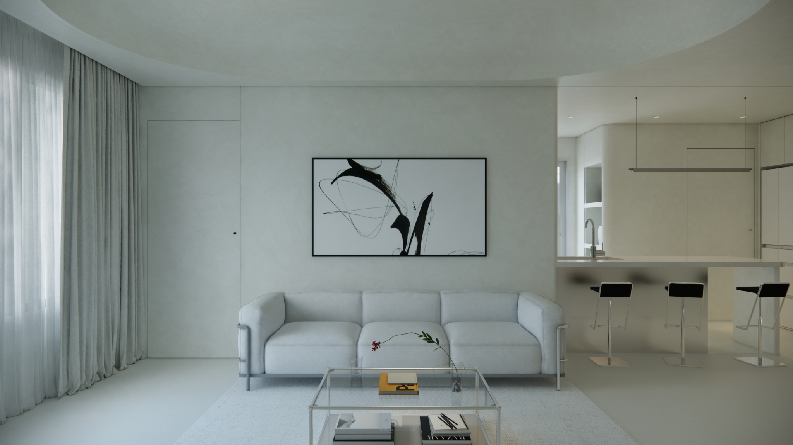

Our Story | 我們的故事
設計不只是空間，而是一段與生活的對話。
同翕設計是一群相信空間能改變生活的人。
我們來自不同背景，卻有共同的信念：讓設計成為人與人之間最溫柔的橋樑。
我們不追求浮華與速度，而是專注傾聽故事與需求，細膩轉化為貼近生活的設計。
對我們而言，每個案子都是一次與生活的深刻對話，不只是完成一個家，
而是讓空間承載關係、夢想與未來。
同翕設計｜體驗夢想實現的美好
Themis Design is a team that believes space can transform life.
We come from diverse backgrounds, yet share the same belief: design can be the gentlest bridge between people.
Instead of chasing extravagance and speed, we focus on listening to stories and needs, then carefully translating them into designs that truly fit everyday living.
For us, every project is a deep dialogue with life itself—not just creating a home, but shaping a space that carries relationships, dreams, and the future.